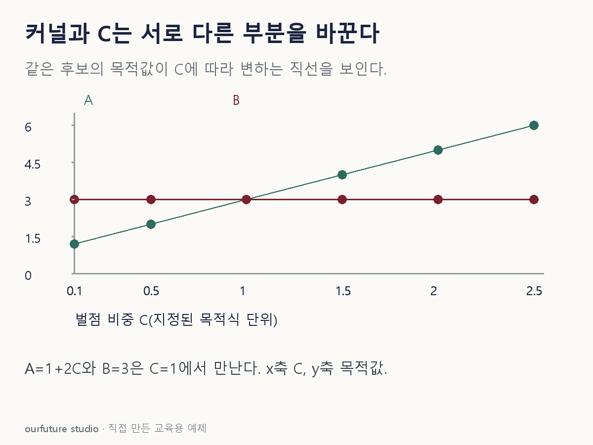

조건을 바꾸며 확인하기
동일 특징공간에서 가능한 두 후보의 노름 항·위반합을 고정한다. 커널·gamma 변경이나 새 최적해 적합은 아니다.
설명 그림과 비교하기
아래 그림과 표는 고정된 설명 예제입니다. 기본·변형 중 어떤 조건인지 캡션을 읽고, 바꾼 입력의 결과는 계산 칸에서 확인하세요.

같은 문제를 직접 골라 보기
목적식 ½‖w‖²+CΣξ. A=(1,2), B=(3,0)는 두 항의 값이다. C=2.
조건을 더 바꾸면?
C만 0.5로 바꾸면 어느 후보가 작은가?
변형 풀이 확인
A, 목적값 2.
A는 1+0.5×2=2, B는 3이다. C의 변화는 위반 벌점의 상대 비중을 바꾼다.
커널은 내적, C는 위반의 가격.